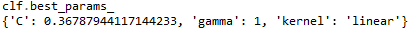

Python Implementation
Shan Wang
Data preprocessing
We first load the dataset and divide it into predictors and response.
import pandas as pd
import numpy as np
import random
import matplotlib.pyplot as plt
from sklearn import svm
from sklearn import cross_validation
from sklearn.model_selection import GridSearchCV
dpath = "./parkinsons.data"
park = pd.read_csv(dpath)
del park["name"]
X = park.loc[:, park.columns != "status"]
y = park.statusCross Validation
Cost is the major hyperparameter, so before we fit our model, we need to choose the best cost first. Here we present two ways to do this in Python. The first way is to use cross_validation. cross_validation calculates the cross validation error. You need to at least assign four parameters: the classifier, predictors, response and number of folds. The classifier is created by calling svm.SVC and you can also specify the kernel and cost. Below is a wrapper of this function. It takes a list of cost and returns the best cost for a given kernel and fold number. It also plots the error rates for different costs in the cost list if plot is True.
def xvalidate(X, y, costs, kernel="linear", n=10, plot=True):
errs = []
for cost in costs:
clf = svm.SVC(kernel=kernel, C=cost)
scores = cross_validation.cross_val_score(clf, X, y, cv=n)
errs.append(1 - scores.mean())
if plot:
plt.plot(errs, label="cv_error")
return costs[np.argmin(errs)]We then can call this function and see the results for linear kernel and gaussian kernel. Note that costs are usually set to be a geometric sequence.
costs = np.exp(list(range(-4, 4)))
random.seed(123)
cost_l = xvalidate(X, y, costs, kernel="linear")
print("linear kernel best cost = \n", cost_l)
CV Error of Linear Kernel

cost_g = xvalidate(X, y, costs, kernel="rbf")
print("linear kernel best cost = \n", cost_g)
CV Error of Gaussian Kernel

From the two plots above, we can see cost does play an important role in the performance of SVM classifer.
Model Fitting
The other way is to use sklearn.model_selection.GridSearchCV. One has to specify three parameters: classifier, parameters and number of folds. Parameters should be dictionaries of list of dictionaries. As it is named, GridSearchCV conducts grid search for each combination of hyperparameters. So the time complexity will be huge if we input a large dictionary. Therefore, a greedy way is recommended. Because we already know cost should be around \([e^{-1}, e]\) in the above analysis, we do not include other costs here. Note that we include a new hyperparameter gamma, which is a parameter in the gaussian kernel.
#Gamma is taken to be an arithmetic sequence because gaussian kernel is already an exponential function
parameters = {'kernel':('linear', 'rbf'), 'C':np.exp(list(range(-1, 2))), 'gamma': [2, 3, 4]}
svc = svm.SVC()
clf = GridSearchCV(svc, parameters, cv=10)
clf.fit(X, y)After fitting the model with clf.fit, The best parameters and the corresponding accuracy can be found in the attributes best_params_ and best_score_.
clf.best_params_
clf.best_score_

As we can see, the best hyperparameters are \(cost=e^{-1}\) and \(kernel=linear\).
Then we can use the hyperparameters decided above to fit our data. As you may already noticed, there are two steps. You should first create an SVM classifier object by calling svm.SVC. Then you fit the model by calling the fit method and specify the predictors and reponse. Finally, clf.predict can be used to predict new data points. You need to pass a data structure (e.g. list of lists, data frame) of the same columns as X and the function will return an array of reponse.
clf = svm.SVC(kernel='linear', C=np.exp(-1))
clf.fit(X, y)